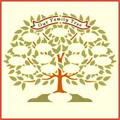
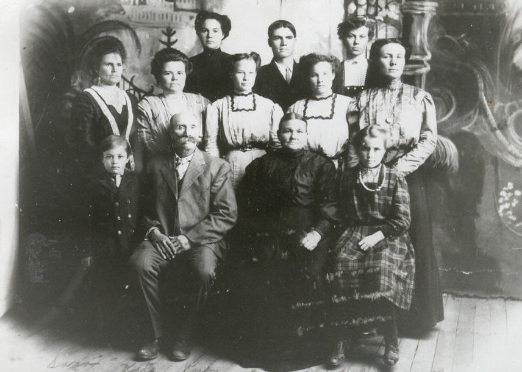
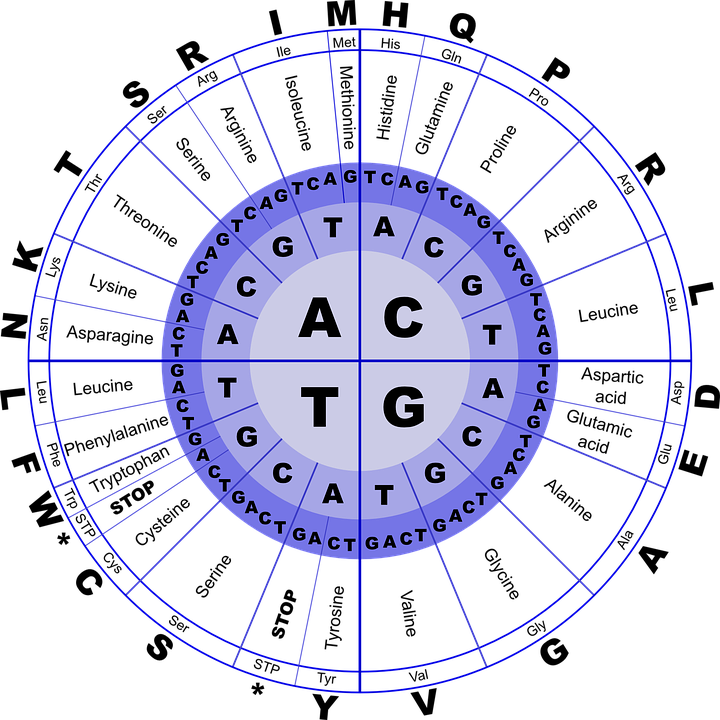
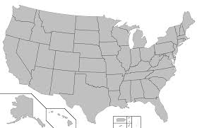

About the Course Catalog
Welcome to the Course Catalog for The Family History Guide. There are full-length classes - 60 minutes each - and mini-classes, which range from 15 to 30 minutes each, designed for quick instruction. For each class, links are provided to the starting Goals for the class.
Class length may vary, depending on the pacing you use and whether you include additional lab or hands-on time at the end of a course. You can use the Project Tracker sheets to plan the timing details or see Instructor Tips.
You can also create custom classes by combining two or more mini-classes of your choosing.
Instructor Prep

Here are some tips for preparing to teach classes in the Course Catalog of The Family History Guide:
- Read through the Goals, Choices, and Steps for the class.
- Decide if there are any Choices that you will skip for your class.
- Read the articles and watch the videos included in the Choices. Decide on which of these you will skip and which you will emphasize in the class. (Generally avoid showing an entire video in class, unless it is very brief.)
- Take notes on the articles or videos you like so you can share this info in the class.
- Estimate the amount of time you want to spend on each Choice, allowing for Q&A and any hands-on practice you'd like to do.
- Use Tracker sheets to monitor student progress in the Project involved in the class.
Course Catalog
Beginning Classes
Beginning Family History - Get a great start with family history, including the option of learning computer basics. Also learn about family history concepts and how to find and organize your own records.
Goals in this class: Intro to Family History - Introduction section; Computer Basics (optional) - Introduction section;
Gather Memories - Project 2, Goal 1; Navigate Family Tree - Project 1, Goal 1
Family Tree Classes - Project 1
Family Tree Navigation - Get comfortable with navigating your family tree in FamilySearch, including viewing details for your ancestors and finding ancestors quickly in your tree.
Goals in this class:
1: Navigation; 2: Life Details; 3: Children and Spouses; 4: Find and Go To
Using Family Tree - Explore alternate views in your tree (fan chart, portrait, descendancy), as well as updating information and adding new ancestors to your tree. Also learn how to add sources to your family tree to verify your information.
Goals in this class:
Goal 5: Alternate Views; Goal 6: Changing Information; Goal 7: Adding Ancestors; Goal 8: Adding Sources
Mini-Classes
Getting Started with Navigation - Goal 1 - 15:00
Viewing Ancestors in Landscape View - Goals 2-4 - 30:00
Alternate Views: Fan, Portrait, Descendancy - Goal 5 - 20:00
Adding and Changing Information in FS - Goals 6-7 - 20:00
Sourcing - Goal 8 - 30:00
Using Find-a-Record - Goal 9 - 20:00
Notes and Discussions - Goal 10 - 15:00
Merging - Goal 11 - 30:00
Memories Classes
Making Memories - Gather your memories, organizing the photos and documents that you will upload to FamilySearch. Also learn skills for interviewing living relatives to add their memories to yours.
Goals in this class: 2: Gathering Memories; 2: Browsing Memories; 3: Organizing Photos and Documents; 4: Interviewing Relatives
Uploading Memories - Learn how to tag and upload digital photos to FamilySearch so they can be shared with others. Also upload digital documents and stories about ancestors.
Goals in this class: 5: Preparing Photos and Docs for Upload; 6: Adding and Tagging Photos; 7: Adding Documents; 8: Adding Stories
Mini-Classes
Interviewing Tips - Goal 4 - 20:00
Uploading Photos to Memories - Goals 5-6 - 30:00
Uploading Other Files to Memories - Goals 7-8 - 20:00
Writing a Life Story - Goal 9 - 20:00

Descendancy
Descendancy Research - Learn how to trace descendants of your ancestors from several generations back. Get familiar with useful tools that help you visualize your descendant family lines, as well as finding your relationships to famous figures in history.
Goals in this class: 1: Identifying Descendant Lines; 2: Using Descendancy Sourcing Tools; 3: Using Puzzilla.org; 4: Using Relative Finder
Mini-Classes
Identifying Descendancy Lines - Goal 1 - 20:00
Using Puzzilla.org - Goal 3 - 30:00
Using Relative Finder - Goal 4 - 15:00
Research Classes
Starting Your Research - Learn the keys to getting started with your own family history research. This includes organizing your research materials, finding research strategies that work for you, and solving problems so you can extend and improve your research.
Goals in this class: 1: Getting Organized for Research; 3: Forming a Strategy; 5: Solving Problems
Search Techniques - Learn how to search for records online, including Google searches, and how to find the information you need in the records you browse. Also get an introduction to using catalogs, books, and periodicals in libraries to expand your family history reach.
Goals in this class: 4: Searching Records; 6: Using Catalogs, Books, and Periodicals
Mini-Classes
Identifying Ancestors to Research - Goal 2 - 20:00
Forming a Research Strategy - Goal 3 - 30:00
Searching Records, Part 1 - Goal 4, Choices A-C - 20:00
Searching Records, Part 2 - Goal 4, Choices D-F - 30:00
Research Techniques, Part 1 - Goal 5, Choices A-C - 30:00
Research Techniques, Part 2 - Goal 5, Choices D-F - 30:00
Using Catalogs - Goal 6, Choices A-B - 15:00
Using Books and Periodicals - Goal 6, Choices C-E - 20:00
Taking a Family History Trip - Goal 7 - 30:00
Indexing
Indexing - Get started with creating index entries for record batches, to help others research more effectively. Also learn to set indexing goals and continuously improve your indexing skills.
Goals in this class: 1: Learning about Indexing; 2: Getting Started with Indexing; 3: Setting Indexing Goals; 4: Improving Basic Indexing Skills
Collaboration
Collaborating on Family History - Find out where you can get your family history questions answered, and how to take advantage of online genealogy groups. Also discover ways you can collaborate with others on your research or help others with theirs.
Goals in this class:
1: Get help with your Genealogy;
2: Join Facebook Groups and Genealogy Societies; 3: Help Others with their Family Trees
Technology Classes

Genealogy Software - Get introduced to several types of genealogy databases to see what fits your needs. Also learn how to create and upload a sample family tree to get started.
Goals in this class: 4: Choosing Database Software; 5: Creating and Uploading a Family Tree
Social Media - Find an assortment of webinars and podcasts to help you grow in family history skills, and explore social media resources for genealogy, such as YouTube, Google, Facebook, Instagram, and more.
Goals in this class: 1: Podcasts and Webinars; 3: Using Social Media
DNA Classes
Genetics and Testing - Get an introduction to the science of genetics and how it forms the basis for DNA research for family history. Also learn how DNA tests are conducted and how you can find a take one yourself.
Goals in this class: 1: Basic Genetics and DNA Research; 2: About DNA Testing; 3: Selecting and Taking a DNA Test
Matching and Ethnicity - Learn about finding others who have taken DNA tests and may be close matches to your ancestry. Discover your ethnic percentages revealed from your DNA testing.
Goals in this class: 4: DNA Matching; 5: DNA Ethnicity Results
U.S. Research Classes
Introduction to U.S. Research - Learn about the basic types of U.S. records and how to use location, geography, and timelines as cornerstones of your research efforts. Also learn the basics of conducting state-by-state U.S. research.
Goals in this class: A1: U.S. Records; A2: Location and Geography; A3: U.S. Research by State
Mini-Classes
Introduction to U.S. Records - Goal A1 - 20:00
Using Maps and Gazetteers - Goal A2, Choices A-C - 30:00
City Directories and Timelines - Goal A2, Choices D-E - 30:00
Introduction to State Research - Goal A3 - 15:00
U.S. Vital Records - Learn about the various types of vital records (birth, marriage, and death), where to find them, and how to use them for research.
Goals in this class: B1: Understanding Vital Records; B2: Exploring Birth Records; B4: Exploring Marriage Records; B5: Exploring Death Records and Obituaries
Mini-Classes
Introduction to Vital Records - Goal B1 - 15:00
Explore Birth Records - Goal B2 - 20:00
Explore Adoption Records - Goal B3 - 15:00
Explore Marriage Records - Goal B4 - 20:00
Explore Death Records & Obits - Goal B5 - 30:00
Explore Cemetery Records & Tombstones - Goal B6 - 20:00
U.S. Census Records - Get an introduction to U.S. Census records and how to read them effectively for your research. Also explore census records from 1940 back to 1790 and learn what to expect from the records in each decade.
Goals in this class: C1: Introduction to Census Records; C2: Census Records by Decade
Mini-Classes
Introduction to Census Records - Goal C1 - 30:00
Explore the U.S. Census by Decades - Goal C2 - 30:00

Immigrant Ancestors - Learn the skills you need to trace your immigrant ancestors. You'll explore immigration and naturalization records, passenger lists, and more.
Goals in this class: D1: U.S. Immigration Records; D2: Naturalization Records and Passenger Lists; D3: Other Immigration Resources;
Mini-Classes
Finding Immigrant Ancestors - Goal D1 - 30:00
Naturalization & Passenger Lists - Goal D2 - 30:00
U.S. Military Records - Find records that help you trace your ancestors in the U.S. military. Explore military records in each major conflict, such as the Revolutionary War, Civil War, and both World Wars.
Goals in this class:
E1: U.S. Military Records; E2: Military Records by Conflict
Mini-Classes
Introduction to U.S. Military Records - Goal E1 - 20:00
Revolutionary and Civil War Records - Goal E2, Choices A-B - 30:00
World War I and II Records - Goal E2, Choices C-D - 30:00
Other U.S. Records - Learn about a variety of helpful records for research, including church and religious records, land and property records, court records, and newspapers. Also explore resourcers in archives and libraries.
F1. Church Records; F2. Property Records; F3. Court Records; F4. Newspapers; F5. Archives and Libraries
Mini-Classes
Church and Religious Records - Goal F1, Choices A-B - 20:00
Pioneer and Migration Records - Goal F1, Choice C - 15:00
Land Records - Goal F2, Choice A - 15:00
Probate Records and Wills - Goal F2, Choice B - 20:00
Court Records - Goal F3 - 15:00
Using Newspapers for Research - Goal F4 - 20:00
Exploring Archives and Libraries - Goal F5 - 20:00
LDS Topics - Learn about policies for submitting ordinances, as well as how to find temple names, print cards, and manage reservation lists.
Goals in this class:
1: Learning the Ordinance Policies; 2: Finding Temple Opportunities; 3: Identifying Temple Names; 5: Printing Ordinance Cards; 6: Managing Reservation Lists
Mini-Classes
LDS Overview - Inspiration, FTT, Goal 1 - 15:00
Finding Temple Names - Goals 2-3 - 30:00
Printing and managing reserved lists - Goals 5-6 - 15:00